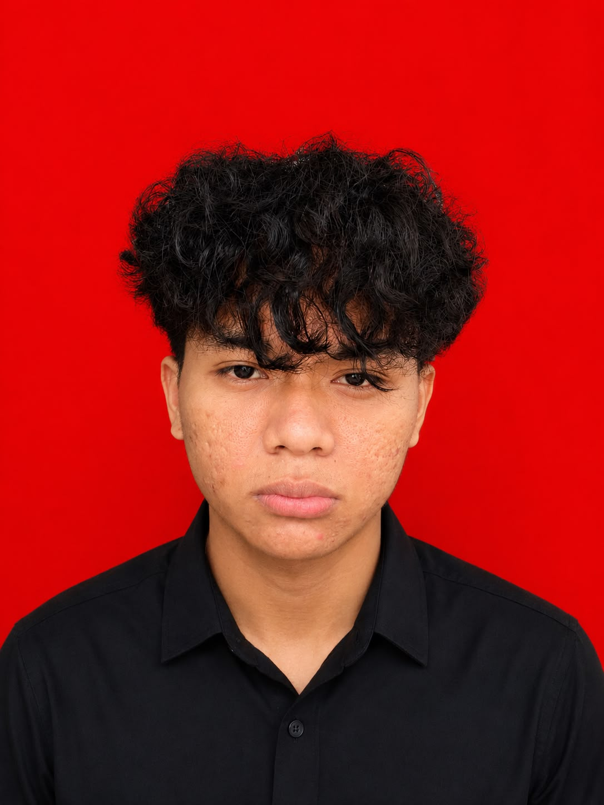

PENDIDIKAN DASAR
SDN Jati Galih
Sekolah Dasar
Halo, saya
Saya memiliki pengalaman praktik kerja lapangan di bidang pengelasan serta kemampuan mengoperasikan komputer dan Microsoft Office.

Perkenalan singkat dan informasi pribadi.
Saya adalah pribadi yang memiliki semangat untuk belajar, bertanggung jawab, dan mampu bekerja sama. Saya siap mengembangkan kemampuan serta mendapatkan pengalaman baru di lingkungan kerja.
APRILIANSYAHPerjalanan pendidikan saya.
Sekolah Dasar
Sekolah Menengah Pertama
Sekolah Menengah Kejuruan
Perguruan Tinggi
Pengalaman praktik yang pernah saya jalani.
Mengikuti kegiatan Praktik Kerja Lapangan selama tiga bulan untuk memperoleh pengalaman langsung di lingkungan industri.
Bekerja sebagai Operator Mesin Press selama 1 tahun, dengan tanggung jawab mengoperasikan mesin press dalam kegiatan produksi.
Kemampuan yang tercantum dalam CV.
Las SMAW dan Las MIG
Mengoperasikan Microsoft Office
Visualisasi bar hanya elemen desain, bukan penilaian tingkat kemampuan.
TERBUKA UNTUK KESEMPATAN
Silakan hubungi saya melalui informasi berikut.